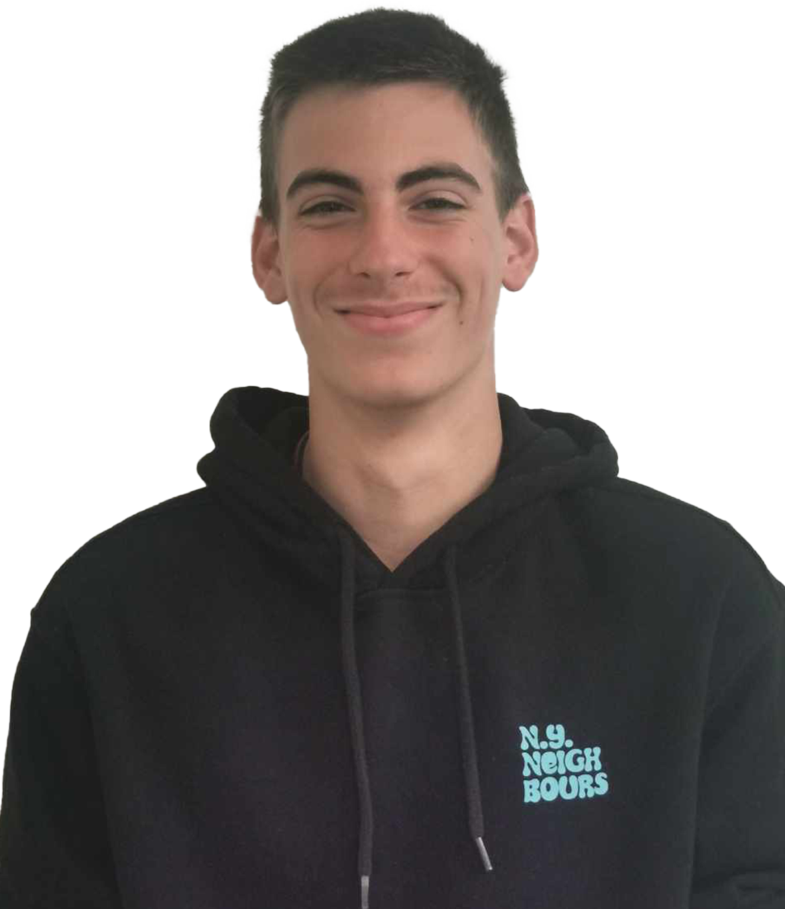

Zsiros Márton
UI/UX DesignerA csapatban a vizuális tervezésért és felhasználói felületek kialakításáért felelős vagyok. Modern, könnyen használható weboldalakat tervezek.
A csapatban a vizuális tervezésért és felhasználói felületek kialakításáért felelős vagyok. Modern, könnyen használható weboldalakat tervezek.
A csapat vezetője és főfejlesztő vagyok. Koordinálom a projekteket és végzem a fő fejlesztési feladatokat. Webes felületekkel és scripteléssel foglalkozok.
A csapatban a tesztelésért vagyok felelős. Hibák felderítése és a projektek megbízható működésének ellenőrzése a feladatom.